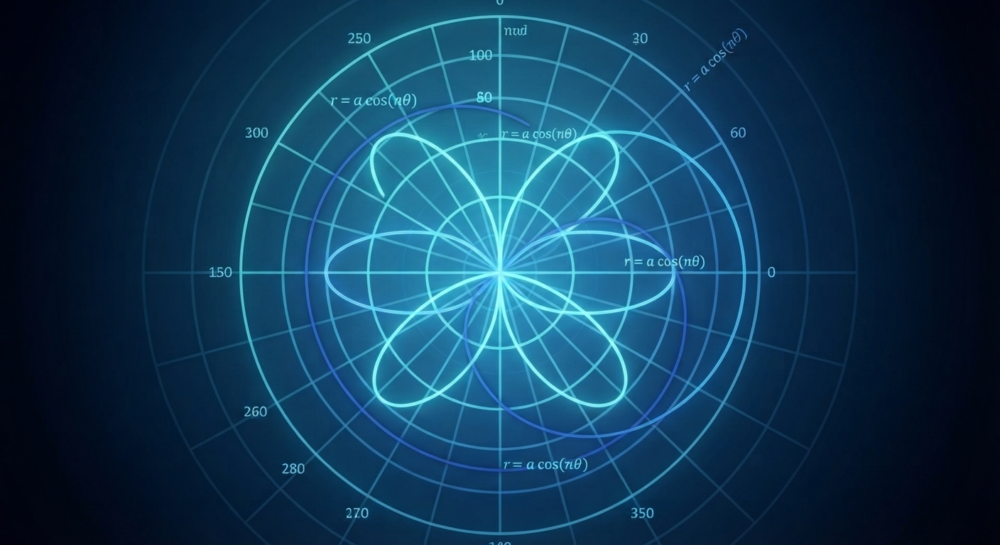

1. Fundamentos del Sistema Polar

El Polo y el Eje Polar
A diferencia del sistema cartesiano basado en cuadrículas rectangulares, el sistema polar se establece mediante un punto fijo llamado Polo (origen) y una semirrecta horizontal inicial llamada Eje Polar.
Interpretación del Par Ordenado (r, \theta)
- Radio vector (r): Distancia dirigida desde el Polo hasta el punto geométrico.
- Ángulo polar (\theta): Medida de rotación angular respecto al Eje Polar (positivo en sentido antihorario).
Casos Especiales: Radios y Ángulos Negativos
Si r < 0: El punto se localiza midiendo la distancia absoluta en la dirección exactamente opuesta al ángulo \theta.
Si \theta < 0: El giro angular se realiza en sentido horario.
2. El "Puente" de Conversión (Cartesiano ⇄ Polar)
Fórmulas de Transformación
Relacionamos ambos sistemas mediante identidades trigonométricas y algebraicas:
- De Polar a Cartesiano: x = r · cos(θ), y = r · sen(θ)
- De Cartesiano a Polar: r2 = x2 + y2, tan(θ) = y / x
Ejemplo Paso a Paso
Transformemos el punto cartesiano (1, 1) a coordenadas polares:
- Radio (r): r = √(12 + 12) = √2
- Ángulo (θ): θ = arctan(1 / 1) = π / 4 rad (45°)
- Resultado: Coordenada polar (√2, π / 4)
3. Laboratorio Interactivo de Curvas Polares
Visualizador Dinámico de Familias Polares
Modifica los parámetros para observar el comportamiento geométrico de las curvas:
4. Aplicación en Límites en Dos Variables
Resolución de Indeterminaciones (0/0)
Cuando evaluamos un límite en el origen (x, y) → (0, 0) y obtenemos una indeterminación del tipo 0 / 0, el cambio a coordenadas polares mediante x = r · cos(θ) y y = r · sen(θ) nos permite transformar la expresión evaluando cuando el radio tiende a cero (r → 0+) de forma independiente al ángulo θ.
Ejemplo Resuelto Paso a Paso
Analicemos el siguiente límite:
lim(x,y)→(0,0) (x3 + y3) / (x2 + y2)
- Sustitución polar: Reemplazamos x y y, recordando que x2 + y2 = r2.
- Simplificación algebraica: limr→0+ [r3(cos3(θ) + sen3(θ)) / r2] = limr→0+ [r · (cos3(θ) + sen3(θ))]
- Evaluación del límite: Como el término trigonométrico está acotado, al multiplicar por r que tiende a 0, el límite resulta 0.